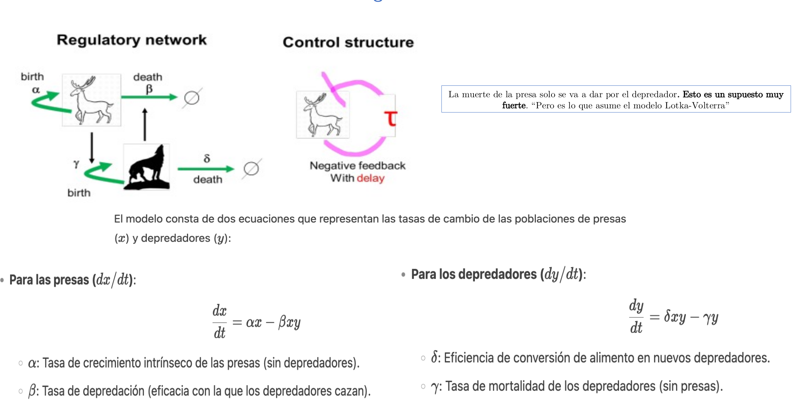
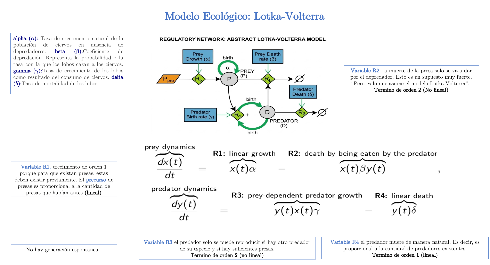

Introducción
Dos poblaciones, una historia
Imagina una isla con conejos (presas) y zorros (depredadores). Los conejos se reproducen solos; los zorros necesitan encontrarse con un conejo para comer y reproducirse. Este tutorial explora cómo se comporta ese sistema con matemáticas sencillas y con gráficos que puedes tocar.


💡 En palabras simples
Vamos a estudiar dos poblaciones que cambian con el tiempo: x(t) es cuántas presas hay, y(t) es cuántos depredadores. Queremos entender cómo evolucionan cuando interactúan entre ellas.
Modelo que vamos a estudiar
Dos ecuaciones diferenciales acopladas:
$$\dot x=\alpha x-\beta xy,\qquad \dot y=\gamma xy-\delta y$$
Cada letra griega es un parámetro con un significado concreto. Los iremos presentando paso a paso. Valores por defecto: \alpha=1.1, \beta=0.4, \gamma=0.10, \delta=0.40.
Paso 1 · ¿Quién interactúa con quién?
La red de reacciones: un mapa visual del sistema
Antes de escribir ecuaciones, hagamos un mapa. En el sistema pasan cuatro "cosas" (las llamamos reacciones) y cada una aporta un término a las ecuaciones:
| Reacción | Qué pasa | Velocidad | Efecto |
|---|---|---|---|
| R1 | Las presas nacen solas | v_1=\alpha x | Aumentan las presas |
| R2 | Un depredador mata una presa | v_2=\beta x y | Disminuyen las presas |
| R3 | Un depredador come y se reproduce | v_3=\gamma x y | Aumentan los depredadores |
| R4 | Los depredadores mueren solos | v_4=\delta y | Disminuyen los depredadores |
🔍 Analogía
Las reacciones R2 y R3 necesitan que un depredador y una presa se encuentren. Por eso su velocidad es proporcional al producto x\cdot y: si hay muchas presas y muchos depredadores, habrá muchos encuentros. En cambio R1 y R4 solo dependen de una población (nacimientos o muertes naturales).
Diagrama de la red
Elige una reacción y mira qué flechas del diagrama se iluminan. Las flechas punteadas grises son modificadores: participan pero no se consumen.
Paso 2 · Las ecuaciones, término por término
De las reacciones a las matemáticas
Ahora sumamos los aportes de cada reacción. La presa gana con R1 y pierde con R2; el depredador gana con R3 y pierde con R4:
$$\frac{dx}{dt}=\underbrace{\alpha x}_{R_1}-\underbrace{\beta x y}_{R_2},\qquad \frac{dy}{dt}=\underbrace{\gamma x y}_{R_3}-\underbrace{\delta y}_{R_4}$$
¿Qué significa cada parámetro?
- \alpha · tasa de nacimiento de presas (sin depredadores).
- \beta · qué tan eficiente es el depredador cazando presas.
- \gamma · cuánta energía de presas se convierte en nuevos depredadores.
- \delta · tasa de muerte natural de depredadores.
💡 En palabras simples
- Términos lineales (\alpha x, \delta y): solo dependen de una población.
- Términos no lineales (\beta xy, \gamma xy): dependen del encuentro entre las dos.
Juega con las poblaciones y mira los términos
Mueve x e y y observa cómo cambian las "contribuciones".
- Con y=0 (sin depredadores) la presa crece libremente: \dot x=\alpha x.
- Con x=0 (sin presas) el depredador decae: \dot y=-\delta y.
- Los términos con xy son pequeños si cualquiera de las dos poblaciones es chica.
Paso 3 · ¿Hay algo que se conserve?
La cantidad oculta que nunca cambia
En física, cuando algo se conserva podemos simplificar muchísimo el problema. Aquí no se conserva la suma x+y (el sistema crea y destruye individuos). Pero existe otra cantidad que sí se conserva, aunque es más complicada:
$$V(x,y)=\gamma x-\delta\ln x+\beta y-\alpha\ln y$$
Y cumple que \dfrac{dV}{dt}=0 en toda trayectoria. Lo podemos verificar con álgebra simbólica:
Verificación simbólica
\dfrac{dV}{dt}=0 ⇒ V es constante sobre cada órbita.
🔍 Analogía
Piensa en una montaña con curvas de nivel. Si caminas siempre a la misma altura, tu trayectoria está contenida en una de esas curvas. Aquí V hace las veces de "altura": cada órbita vive en una curva de nivel.
¿Por qué esto nos ayuda?
- Las órbitas son curvas cerradas que nunca se cruzan → el sistema oscila para siempre.
- Podemos reducir los 4 parámetros a uno solo (\lambda=\delta/\alpha) cambiando de variables.
Verifica la conservación con tus propios ojos
—
Paso 4 · Los datos y el problema a resolver
Fabricamos "datos de laboratorio" y planteamos la meta
Para practicar cómo se ajusta un modelo a datos reales, fabricamos unos datos sintéticos: simulamos el modelo con parámetros conocidos ("la verdad") y luego añadimos ruido como si vinieran de un experimento con errores de medición.
💡 En palabras simples
- "La verdad": los parámetros reales (\alpha,\beta,\gamma,\delta) = (1.1, 0.4, 0.1, 0.4).
- Condiciones iniciales: (x_0, y_0) = (6, 2).
- Ruido: multiplicamos cada medición por un número aleatorio alrededor de 1 con 5% de desviación.
¿Qué debería reproducir el modelo?
- Oscilaciones que no se apagan (amplitud constante).
- El depredador va un cuarto de ciclo detrás de la presa (primero sube la presa, luego el depredador).
- Los promedios de cada población coinciden con el punto fijo teórico.
Datos sintéticos
—
Prueba con condiciones iniciales distintas
Mueve los deslizadores y ve cómo la curva del modelo se aleja o se acerca a los datos.
Paso 5 · Puntos de equilibrio y su estabilidad
¿Dónde se "queda quieto" el sistema?
Un punto de equilibrio (o punto fijo) es un estado en el que nada cambia: \dot x=0 y \dot y=0. Resolviendo, aparecen dos:
$$(x^*,y^*)=(0,0)\quad\text{(extinción)},\qquad (x^*,y^*)=\left(\frac{\delta}{\gamma},\ \frac{\alpha}{\beta}\right)\quad\text{(coexistencia)}$$
💡 Qué significa cada uno
- (0,0) · sin presas ni depredadores. Es inestable (una "silla"): cualquier presa que aparezca se multiplica.
- Coexistencia · ambas poblaciones viven. Es un centro: las poblaciones oscilan alrededor sin irse nunca.
El Jacobiano (una matriz de derivadas) nos dice qué tipo de equilibrio es. Su forma general es:
$$J(x,y)=\begin{pmatrix}\alpha-\beta y & -\beta x\\ \gamma y & \gamma x-\delta\end{pmatrix}$$
En el punto de coexistencia sus autovalores son puramente imaginarios:
$$\lambda_{1,2}=\pm i\sqrt{\alpha\delta}$$
Consecuencia
El periodo de las oscilaciones cerca del equilibrio es T_{lin}=2\pi/\sqrt{\alpha\delta}. A mayor producto \alpha\delta, más rápidas las oscilaciones.
Explora cómo cambian el equilibrio y las oscilaciones
—
- x^* solo cambia con \delta y \gamma.
- y^* solo cambia con \alpha y \beta.
- Subir \alpha o \delta hace las oscilaciones más rápidas.
Paso 6 · Simulación numérica
Dejemos que la computadora resuelva las ecuaciones
Como las ecuaciones no tienen solución exacta sencilla, las resolvemos paso a paso con un método numérico (Runge–Kutta de orden 4). La idea: avanzar en el tiempo dividiendo el intervalo en trozos muy pequeños.
💡 Detalle técnico importante
Este sistema no tiene fricción: si el método numérico es malo, las órbitas se van "abriendo" o "cerrando" aunque no deberían. Con RK4 y pasos finos, la deriva de V queda muy pequeña.Explorador dinámico
Ajusta parámetros, condiciones iniciales y horizonte temporal.
—
- Las oscilaciones nunca se apagan: eso predice el modelo y lo confirma la simulación.
- La amplitud depende de dónde empieces, pero el periodo es casi el mismo.
- La forma de la órbita: picos rápidos de presa seguidos de descensos suaves.
Paso 7 · Ajustar los parámetros a los datos
El corazón del trabajo científico: encontrar los parámetros que mejor explican lo observado
Queremos encontrar los parámetros \theta=(\alpha,\beta,\gamma,\delta) que hacen que el modelo se parezca lo más posible a los datos. Medimos el "parecido" con una función de costo:
$$S(\theta)=\sum_k \left(x_{mod}(t_k;\theta)-x_{datos}(t_k)\right)^2 + \left(y_{mod}(t_k;\theta)-y_{datos}(t_k)\right)^2$$
💡 En palabras simples
- S mide "qué tan lejos" está el modelo de los datos: mientras más chico, mejor.
- Minimizar S es buscar el mejor ajuste.
- Usamos un algoritmo llamado Levenberg–Marquardt. Como es fácil caer en "valles falsos", probamos 6 puntos de partida distintos (multi-arranque).
Parte A · El "paisaje" del costo
Estos gráficos muestran cuánto cambia S cuando movemos un parámetro a la vez. La línea punteada negra marca el valor verdadero.
—
Parte B · Ejecuta el ajuste completo
Haz clic en el botón. El algoritmo probará 6 puntos de partida distintos y te mostrará el mejor.
- El mejor ajuste debe recuperar los parámetros verdaderos con errores del orden del ruido (≈5%).
- La función S puede tener varios mínimos locales (óptimos falsos) por "aliasing de periodos": un modelo que se desfasa un ciclo entero también "parece" ajustar bien.
- Por eso el multi-arranque es necesario: no basta un único intento.
Paso 8 · ¿Qué tan sensible es el modelo?
Robustez: cómo cambia el comportamiento cuando tocamos los parámetros
Una última pregunta importante: si nos equivocamos un poco en un parámetro, ¿cambia mucho el comportamiento? Medimos eso con la sensibilidad logarítmica:
$$S_p^M = \frac{\partial \ln M}{\partial \ln p} \approx \frac{[M(p\cdot 1.05)-M(p\cdot 0.95)]/M(p)}{0.10}$$
💡 En palabras simples
- M es una métrica del comportamiento (punto fijo, periodo, amplitud…).
- S_p^M nos dice: si cambio p un 1%, ¿cuánto cambia M?
- Si S\approx 0: insensible. Si S\approx 1: cambia igual. Si |S|>1: muy sensible.
Tabla de sensibilidades (±5% en cada parámetro)
Perturba un parámetro y mira qué pasa
—
- Tocar \alpha o \delta cambia el periodo: la curva se desfasa.
- Tocar \beta o \gamma cambia la amplitud, pero casi no el periodo.
- Esto coincide con la teoría: cada parámetro tiene una "función" distinta.
Síntesis: el recorrido completo
Los 8 pasos, resumidos en una tabla
| Paso | Pregunta | Herramienta | Conclusión |
|---|---|---|---|
| 1 | ¿Quién interactúa con quién? | Diagrama de la red | 4 reacciones + 2 modificadores |
| 2 | ¿Cómo se escribe? | Acción de masas | Dos EDOs, términos lineales y bilineales |
| 3 | ¿Qué se conserva? | Primera integral V | Órbitas cerradas, todo se reduce a 1 parámetro |
| 4 | ¿Contra qué valido? | Datos sintéticos | Oscilación + desfase T/4 + promedios = punto fijo |
| 5 | ¿Dónde está el equilibrio? | Jacobiano y autovalores | Silla en (0,0); centro en coexistencia |
| 6 | ¿Cómo evoluciona en el tiempo? | Runge–Kutta 4 | Ciclos sostenidos, conservación numérica |
| 7 | ¿Qué parámetros explican los datos? | Levenberg–Marquardt + multi-arranque | Recupera la verdad dentro del ruido |
| 8 | ¿Qué tan sensible es? | Sensibilidades logarítmicas | Periodo sensible a α y δ; amplitud a β y γ |